전기공사산업기사 (2013-06-02 기출문제)
1과목: 전기응용
1. 전동기 운전시 발생하는 진동 중 전자력의 불평형 원인에 의한 것은?
- 회전자의 정적 및 동적 불균형
- 베어링의 불균형
- 상대기계와의 연결 불량 및 설치 불량
- 회전시 공극의 변동
(정답률: 63%)

2. 고융점 재료 및 금속박 재료의 용접을 쉽게 할 수 있는 가열방식은?
- 저항 가열
- 아크 가열
- 유도 가열
- 전자빔 가열
(정답률: 56%)
3. 전기차량의 집전장치가 아닌 것은?
- 트롤리 봉
- 복진지
- 뷔겔
- 팬터그래프
(정답률: 60%)
4. 그림과 같은 점광원으로부터 원뿔의 밑면까지의 거리가 4m이고, 밑면의 반경이 3m인 원형면의 평균 조도가 100[lx]라면 이 점광원의 평균 광도[cd]는??
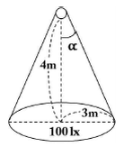
- 225
- 250
- 2250
- 2500
(정답률: 58%)
5. 연축전지(납축전지)의 방전이 끝나면 그 양극(+극)은 어느 물질로 되는가?
- Pb
- Pb0
- Pb02
- PbSO4
(정답률: 80%)
6. 진공도가 10-4 ~ 10-5[mmHg] 정도의 진공 중에서 가열된 텅스텐 합금의 음극으로부터 튀어나온 전자를 직류고전압으로 가속해서 피용접물에 집중하여 용접하는 방법은?
- 전자빔 용접
- 플라즈마 용접
- 레이저 용접
- 초음파 용접
(정답률: 65%)
7. 다음 설명 중 비열을 설명한 것은?
- 단위 시간에 흐른 열량이다.
- 기체나 액체의 운동, 열의 전달이다.
- 1[g]의 물체를 1℃ 상승시키는데 필요한 열량이다.
- 적외선이나 광 등의 복사에너지에 의해서 열이 전달되는 것이다.
(정답률: 78%)
8. 평등 전계 하에서 방전 개시전압은 기체의 압력과 전극간 거리와의 곱의 함수가 된다는 것은?
- 스토크의 법칙
- 스테판 볼츠만의 법칙
- 파센의 법칙
- 프랑크의 법칙
(정답률: 78%)
9. 루소 선도가 그림과 같이 표시되는 광원의 하반구 광속F[lm]은 약 얼마인가?
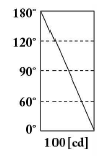
- 371
- 471
- 571
- 671
(정답률: 57%)
10. 백열전구의 시험 항목에 해당되지 않는 것은?
- 구조 시험
- 투광 시험
- 초특성 시험
- 동정특성 시험
(정답률: 53%)
11. 포토 다이오드(Photo diode)에 관한 설명 중 틀린 것은?
- 온도 특성이 나쁘다.
- 빛에 대하여 민감하다.
- PN 접합에 역방향으로 바이어스를 가한다.
- PN 접합의 순방향 전류가 빛에 대하여 민감하다.
(정답률: 62%)
12. 다음의 소자 중 쌍방향성 사이리스터가 아닌 것은?
- DIAC
- TRIAC
- SSS
- SCR
(정답률: 67%)
13. 다음 중 전기저항 용접이 아닌 것은?
- 점 용접
- 불꽃 용접
- 심 용접
- 원자 수소 용접
(정답률: 73%)
14. 1.2[L]의 물을 15℃에서 75℃까지 10분간 가열시킬 때 전열기의 용량[W]은? (단, 효율은 70%이다.)
- 720
- 795
- 856
- 942
(정답률: 52%)
15. 황산 용액에 양극으로 구리 막대, 음극으로 은 막대를 두고 전기를 통하면 은 막대는 구리색이 나는 것을 무엇이라고 하는가?
- 전기 도금
- 이온화 현상
- 전기 분해
- 분극 작용
(정답률: 75%)
16. 연속식 압연기용의 전동기에 대한 자동제어는?
- 정치제어
- 추종제어
- 프로그래밍제어
- 비율제어
(정답률: 46%)
17. 전구에 게터(getter)를 사용하는 목적은?
- 광속을 많게 한다.
- 전력을 적게 한다.
- 효율을 좋게 한다.
- 수명을 길게 한다.
(정답률: 72%)
18. 자동제어 분류에서 제어량에 의한 분류가 아닌 것은?
- 서보 기구
- 프로세스제어
- 자동조정
- 정치제어
(정답률: 57%)
19. 저압 나트륨 등의 특성에 관한 설명으로 틀린 것은?
- 증기압은 4 × 10-3[mmHg]이다.
- 광원의 광색이 단일색광이다.
- 요철 식별이 우수하고 연색성이 좋다.
- 간선도로, 터널 등의 도로조명에 주로 사용된다.
(정답률: 63%)
20. 전기철도에서 전식을 방지하는 방법이 아닌 것은?
- 전차선 전압을 승압 한다.
- 변전소 간격을 단축 한다.
- 도상의 절연저항을 작게 한다.
- 귀선로의 저항을 적게 한다.
(정답률: 59%)
2과목: 전력공학
21. 초호각(arcing horn)의 역할은?
- 풍압을 조정한다.
- 차단기의 단락강도를 높인다.
- 송전효율을 높인다.
- 애자의 파손을 방지한다.
(정답률: 50%)
22. 단상 2선식 계통에서 단락점까지 전선 한 가닥의 임피던스가 6+j8[Ω](전원포함), 단락전의 단락점 전압이 3300[V]일 때 단상 전선로의 단락 용량은 약 몇 [kVA]인가? (단, 부하전류는 무시한다.)
- 455
- 500
- 545
- 600
(정답률: 29%)
23. 불평형 부하에서 역률은 어떻게 표현되는가?
- 유효전력/각 상의 피상전력의 산술합
- 유효전력/각 상의 피상전력의 벡터합
- 무효전력/각 상의 피상전력의 산술합
- 무효전력/각 상의 피상전력의 벡터합
(정답률: 35%)
24. 역률 0.8, 출력 360[kW]인 3상 평형유도 부하가 3상 배전선로에 접속되어 있다. 부하단의 수전전압이 6000[V], 배전선 1조의 저항 및 리액턴스가 각각 5[Ω], 4[Ω]라고 하면 송전단전압은 몇 [V]인가?
- 6120
- 6277
- 6300
- 6480
(정답률: 24%)
25. 1선의 대지정전용량이 C인 3상 1회선 송전선로의 1단에 소호리액터를 설치할 때 그 인덕턴스는?
- 1 / 3ω2C
- 1 / ωC
- 1 / ω2C
- 1 / 3ωC
(정답률: 34%)
26. 기력발전소에서 과잉공기가 많아질 때의 현상으로 적당하지 않은 것은?
- 노 내의 온도가 저하된다.
- 배기가스가 증가된다.
- 연도손실이 커진다.
- 불완전 연소로 매연이 발생한다.
(정답률: 35%)
27. 풍압이 P[kg/m2]이고 빙설이 적은 지방에서 지름이 d[mm]인 전선 1[m]가 받는 풍압하중은 표면계수를 k라고 할때 몇 [kg/m]가 되는가?
- Pk(d+12) / 1000
- Pk(d+6) / 1000
- Pkd / 1000
- Pkd2 / 1000
(정답률: 31%)
28. 전선 a, b, c가 일직선으로 배치되어 있다. a와 b와 c사이의 거리가 각각 5[m]일 때 이 선로의 등가선간거리는 몇 [m]인가?
- 5
- 10
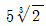
- 5√2
(정답률: 41%)
29. 충전된 콘덴서의 에너지에 의해 트립되는 방식으로 정류기, 콘덴서 등으로 구성되어 있는 차단기의 트립방식은?
- 과전류 트립방식
- 직류전압 트립방식
- 콘덴서 트립방식
- 부족전압 트립방식
(정답률: 47%)
30. 소호리액터 접지방식에서 사용되는 탭의 크기로 일반적인 것은?
- 과보상
- 부족보상
- (-)보상
- 직렬공진
(정답률: 33%)
31. 다음 중 송전선의 1선지락 시 선로에 흐르는 전류를 바르게 나타낸 것은?
- 영상전류만 흐른다.
- 영상전류 및 정상전류만 흐른다.
- 영상전류 및 역상전류만 흐른다.
- 영상전류, 정상전류 및 역상전류가 흐른다.
(정답률: 42%)
32. 배전선로의 전기적 특성 중 그 값이 1 이상인 것은?
- 부등률
- 전압강하율
- 부하율
- 수용률
(정답률: 44%)
33. 154[kV] 송전선로에 10개의 현수애자가 연결되어 있다. 다음 중 전압부담이 가장 적은 것은?
- 철탑에 가장 가까운 것
- 철탑에서 3번째에 있는 것
- 전선에서 가장 가까운 것
- 전선에서 3번째에 있는 것
(정답률: 40%)
34. 가공전선로의 작용 인덕턴스를 L[H], 작용정전용량을 C[F], 사용전원의 주파수를 f[Hz]라 할 때 선로의 특성 임피던스는? (단, 저항과 누설컨덕턴스는 무시한다.)
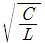
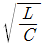
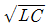
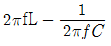
(정답률: 49%)
35. 주상변압기의 1차측 전압이 일정할 경우, 2차측 부하가 증가하면 주상변압기의 동손과 철손은 어떻게 되는가?
- 동손은 감소하고 철손은 증가한다.
- 동손은 증가하고 철손은 감소한다.
- 동손은 증가하고 철손은 일정하다.
- 동손과 철손이 모두 일정하다.
(정답률: 41%)
36. 다음 중 3상 차단기의 정격차단용량으로 알맞은 것은?
- 정격전압 × 정격차단전류
- √3 × 정격전압 × 정격차단전류
- 3 × 정격전압 × 정격차단전류
- 3√3 × 정격전압 × 정격차단전류
(정답률: 48%)
37. 중성점 비접지 방식이 이용되는 송전선은?
- 20~30[kV] 정도의 단거리 송전선
- 40~50[kV] 정도의 중거리 송전선
- 80~100[kV] 정도의 장거리 송전선
- 140~160[kV]정도의 장거리 송전선
(정답률: 46%)
38. 단상 2선식과 3상 3선식의 부하전력, 전압을 같게 하였을 때 단상 2선식의 선로전류를 100%로 보았을 경우, 3상 3선식의 선로 전류는?
- 38[%]
- 48[%]
- 58[%]
- 68[%]
(정답률: 25%)
39. 154[kV] 송전선로에서 송전거리가 154[km]라 할 때 송전용량 계수법에 의한 송전용량은 몇 [kW]인가? (단, 송전용량계수는 1200으로 한다.)
- 61600
- 92400
- 123200
- 184800
(정답률: 34%)
40. 중성점 저항 접지방식의 병행 2회선 송전선로의 지락사고 차단에 사용되는 계전기는?
- 선택접지계전기
- 거리계전기
- 과전류계전기
- 역상계전기
(정답률: 42%)
3과목: 전기기기
41. 3상 동기발전기에서 그림과 같이 1상의 권선을 서로 똑같은 2조로 나누어서 그 1조의 권선전압을 E[V], 각 권선의 전류를 I[A]라 하고 2중 Δ형(double delta)으로 결선하는 경우 선간전압과 선전류 및 피상전력은?
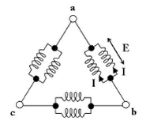
- 3E, I, 5.19EI
- √3E, 2I, 6EI
- E, 2√3I, 6EI
- √3E, √3I, 5.19EI
(정답률: 25%)
42. 200V, 50Hz, 8극, 15kW의 3상 유도전동기에서 전부하 회전수가 720rpm이면 이 전동기의 2차 동손은 몇[W]인가?
- 435
- 537
- 625
- 723
(정답률: 46%)
43. 변압기의 내부고장 보호에 쓰이는 계전기로서 가장 적당한 것은?
- 과전류 계전기
- 역상 계전기
- 접지 계전기
- 브흐홀쯔 계전기
(정답률: 44%)
44. 직류전동기의 속도제어법 중 정지 워드 레오나드 방식에 관한 설명으로 틀린 것은?
- 광범위한 속도제어가 가능하다.
- 정토크 가변속도의 용도에 적합하다.
- 제철용압연기, 엘리베이터 등에 사용된다.
- 직권전동기의 저항제어와 조합하여 사용한다.
(정답률: 32%)
45. 스테핑 모터의 특징을 설명한 것으로 옳지 않은 것은?
- 위치제어를 할 때 각도오차가 적고 누적되지 않는다.
- 속도제어 범위가 좁으며 초저속에서 토크가 크다.
- 정지하고 있을 때 그 위치를 유지해주는 토크가 크다.
- 가속, 감속이 용이하며 정⋅역전 및 변속이 쉽다.
(정답률: 28%)
46. 전기자를 고정자로 하고 계자극을 회전자로 한 전기기계는?
- 직류 발전기
- 동기 발전기
- 유도 발전기
- 회전 변류기
(정답률: 38%)
47. 와류손이 3kW인 3300/110V, 60Hz용 단상 변압기를 50Hz, 3000V의 전원에 사용하면 이 변압기의 와류손은 약 몇[kW]로 되는가?
- 1.7
- 2.1
- 2.3
- 2.5
(정답률: 20%)
48. 전압비가 무부하에서는 33 : 1, 정격부하에서는 33.6 : 1인 변압기의 전압변동률[%]은?
- 약 1.5
- 약 1.8
- 약 2.0
- 약 2.2
(정답률: 38%)
49. 변압기의 전일효율을 최대로 하기 위한 조건은?
- 전부하 시간이 짧을수록 무부하손을 적게 한다.
- 전부하 시간이 짧을수록 철손을 크게 한다.
- 부하시간에 관계없이 전부하 동손과 철손을 같게 한다.
- 전부하 시간이 길수록 철손을 적게 한다.
(정답률: 24%)
50. 동기 발전기의 단락비나 동기 임피던스를 산출하는데 필요한 특성곡선은?
- 단상 단락곡선과 3상 단락곡선
- 무부하포화곡선과 3상 단락곡선
- 부하포화곡선과 3상 단락곡선
- 무부하포화곡선과 외부특성곡선
(정답률: 41%)
51. 3상 유도전동기의 전전압 기동토크는 전부하시의 1.8배이다. 전전압의 2/3로 기동할 때 기동토크는 전부하시보다 약 몇 [%] 감소하는가?
- 80
- 70
- 60
- 40
(정답률: 30%)
52. 전기철도에 주로 사용되는 직류전동기는?
- 직권 전동기
- 타여자 전동기
- 자여자 분권전동기
- 가동 복권전동기
(정답률: 46%)
53. 직류기에서 양호한 정류를 얻을 수 있는 조건이 아닌것은?
- 전기자 코일의 인덕턴스를 작게 한다.
- 정류주기를 크게 한다.
- 자속 분포를 줄이고 자기적으로 포화시킨다.
- 브러시의 접촉저항을 작게 한다.
(정답률: 40%)
54. 6극 3상 유도전동기가 있다. 회전자도 3상이며 회전자 정지시의 1상의 전압은 200V이다. 전부하시의 속도가 1152rpm이면 2차 1상의 전압은 몇 [V]인가? (단, 1차 주파수는 60Hz이다.)
- 8.0
- 8.3
- 11.5
- 23.0
(정답률: 31%)
55. 동기발전기에 관한 다음 설명 중 옳지 않은 것은?
- 단락비가 크면 동기임피던스가 적다.
- 단락비가 크면 공극이 크고 철이 많이 소요된다.
- 단락비를 적게 하기 위해서 분포권과 단절권을 사용한다.
- 전압강하가 감소되어 전압변동률이 좋다.
(정답률: 32%)
56. 440/13200V, 단상 변압기의 2차 전류가 4.5A이면 1차출력은 약 몇 [kVA]인가?
- 50.4
- 59.4
- 62.4
- 65.4
(정답률: 34%)
57. SCR에 대한 설명으로 옳은 것은?
- 턴온을 위해 게이트 펄스가 필요하다.
- 게이트 펄스를 지속적으로 공급해야 턴온 상태를 유지할 수 있다.
- 양방향성의 3단자 소자이다.
- 양방향성의 3층 구조이다.
(정답률: 35%)
58. 권선형 유도전동기에 한하여 이용되고 있는 속도제어법은?
- 1차 전압제어법, 2차 저항제어법
- 1차 주파수제어법, 1차 전압제어법
- 2차 여자제어법, 2차 저항제어법
- 2차 여자제어법, 극수변환법
(정답률: 41%)
59. 저전압 대전류에 가장 적합한 브러시 재료는?
- 금속 흑연질
- 전기흑연질
- 탄소질
- 금속질
(정답률: 32%)
60. 다음 중 인버터(inverter)의 설명을 바르게 나타낸 것은?
- 직류를 교류로 변환
- 교류를 교류로 변환
- 직류를 직류로 변환
- 교류를 직류로 변환
(정답률: 46%)
4과목: 회로이론
61. Y결선 전원에서 각 상전압이 100[V]일 때 선간전압[V]은?
- 150
- 170
- 173
- 179
(정답률: 47%)
62. 그림과 같은 회로의 컨덕턴스 G2에 흐르는 전류는 몇[A]인가?
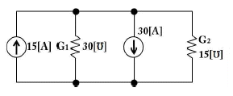
- 3
- 5
- 10
- 15
(정답률: 29%)
63. 임피던스가
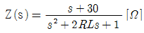
으로 주어지는 2단자 회로에 직류 전류원 3[A]를 가할 때, 이 회로의 단자전압[V]은? (단, s=jω 이다.)- 30[V]
- 90[V]
- 300[V]
- 900[V]
(정답률: 34%)
64. 그림과 같이 선형저항 R1과 이상 전압원 V2와의 직렬접속된 회로에서 V-i 특성을 나타낸 것은?
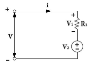
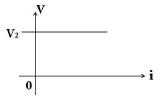
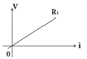
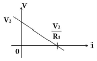
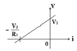
(정답률: 25%)
65. 푸리에 급수에서 직류항은?
- 우함수이다.
- 기함수이다.
- 우함수+기함수이다.
- 우함수×기함수이다.
(정답률: 32%)
66. 그림과 같은 톱니파형의 실효값은?
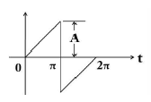
- A/√3
- A/√2
- A/3
- A/2
(정답률: 29%)
67. 파고율이 2이고 파형률이 1.57인 파형은?
- 구형파
- 정현반파
- 삼각파
- 정현파
(정답률: 36%)
68. 2단자 임피던스 함수
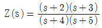
일 때 극점(pole)은?- -2, -3
- -3, -4
- -2, -4
- -4, -5
(정답률: 45%)
69. 다음 중 LC 직렬회로의 공진 조건으로 옳은 것은?
- 1/ωL = ωC + R
- 직류 전원을 가할 때
- ωL = ωC
- ωL = 1/ωC
(정답률: 42%)
70. RL 직렬회로에 VR=100[V]이고, VL=173[V]이다. 전원 전압이 v=√2Vsinωt[V]일 때 리액턴스 양단 전압의 순시값 VL[V]은?
- 173√2 sin(ωt+60°)
- 173√2 sin(ωt+30°)
- 173√2 sin(ωt-60°)
- 173√2 sin(ωt-30°)
(정답률: 21%)
71. 그림의 R-L-C 직렬회로에서 입력을 전압 ei(t), 출력을 전류 i(t)로 할 때 이 계의 전달함수는?
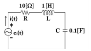
- s / s2+10s+10
- 10s / s2+10s+10
- s / s2+s+10
- 10s / s2+s+10
(정답률: 23%)
72. ejωt의 라플라스 변환은?
- 1 / s-jω
- 1 / s+jω
- 1 / s2+ω2
- ω / s2+ω2
(정답률: 28%)
73. 그림과 같은 회로에서 지로전류 IL[A]과 IC[A]가 크기는 같고 90°의 위상차를 이루는 조건은?
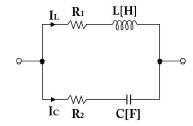
- R1 = R2, R2 = 1/ωC
- R1 = 1/ωC, R2 = ωL
- R1 = ωL, R2 =
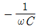
- R1 = -ωL, R2 = 1/ωL
(정답률: 30%)
74. 다음과 같은 Y결선 회로와 등가인 Δ결선 회로의 A, B, C 값은 몇 [Ω] 인가?
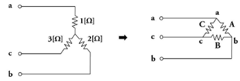
- A=11, B=11/2, C=11/3
- A=7/3, B=7, C=7/2
- A=11/3, B=11, C=11/2
- A=7, B=7/2, C=7/3
(정답률: 36%)
75. 라플라스 함수 F(s)=A/α+s 이라 하면 이의 라플라스 역변환은?
- αeAt
- Aeαt
- αe-At
- Ae-αt
(정답률: 48%)
76. RL 직렬회로에서 시정수의 값이 클수록 과도현상이 소멸되는 시간은 어떻게 변화하는가?
- 길어진다.
- 짧아진다.
- 관계없다.
- 과도기가 없어진다.
(정답률: 30%)
77. 부하저항 RL[Ω]이 전원의 내부저항 Ro[Ω]의 3배가 되면 부하저항 RL에서 소비되는 전력 PL[W]은 최대 전송전력 Pm[W]의 몇 배인가?
- 0.89배
- 0.75배
- 0.5배
- 0.3배
(정답률: 34%)
78. 두 벡터의 값이
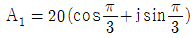
이고,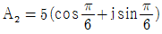
일 때 A1/A2의 값은?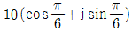
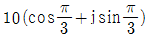
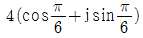
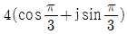
(정답률: 40%)
79. 그림과 같은 불평형 Y형 회로에 평형 3상 전압을 가할 경우 중성점의 전위 Vn[V]는? (단, Y1, Y2, Y3 는 각 상의 어드미턴스[℧]이고, Z1, Z2, Z3 는 각 어드미턴스에 대한 임피던스[Ω]이다.)
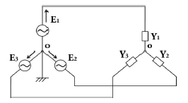
- E1+E2+E3 / Z1+Z2+Z3
- Z1E1+Z2E2+Z3E3 / Z1+Z2+Z3
- E1+E2+E3 / Y1+Y2+Y3
- Y1E1+Y2E2+Y3E3 / Y1+Y2+Y3
(정답률: 35%)
80. 다음과 같은 회로에서 t=0인 순간에 스위치 S를 닫았다. 이 순간에 인덕턴스 L에 걸리는 전압은? (단, L의 초기 전류는 0이다.)
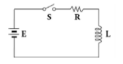
- 0
- LE/R
- E
- E/R
(정답률: 32%)
5과목: 전기설비
81. 고압 가공전선으로 ACSR선을 사용할 때의 안전율은 얼마 이상이 되는 이도(弛度)로 시설하여야 하는가?
- 2.2
- 2.5
- 3
- 3.5
(정답률: 36%)
82. 옥내 고압용 이동전선의 시설방법으로 옳은 것은?
- 전선은 MI 케이블을 사용하였다.
- 다선식 선로의 중성선에 과전류차단기를 시설하였다.
- 이동전선과 전기사용기계기구와는 해체가 쉽게 되도록 느슨하게 접속하였다.
- 전로에 지락이 생겼을 때에 자동적으로 전로를 차단하는 장치를 시설하였다.
(정답률: 40%)
83. 다도체 가공전선의 을종 풍압하중은 수직투영면적 1m2당 몇 Pa을 기초로 하여 계산하는가? (단, 전선 기타의 가섭선 주위에 두께 6mm, 비중 0.9의 빙설이 부착한 상태임)
- 333
- 372
- 588
- 666
(정답률: 21%)
84. 지상에 전선로를 시설하는 규정에 대한 내용으로 설명이 잘못된 것은?
- 1구내에서만 시설하는 전선로의 전부 또는 일부로 시설하는 경우에 사용한다.
- 사용전선은 케이블 또는 클로로프렌 캡타이어 케이블을 사용한다.
- 전선이 케이블인 경우는 철근 콘크리트제의 견고한 개거 또는 트라프에 넣어야 한다.
- 캡타이어 케이블을 사용하는 경우 전선 도중에 접속점을 제공하는 장치를 시설한다.
(정답률: 30%)
85. “지중관로”에 대한 정의로 가장 옳은 것은?
- 지중전선로⋅지중 약전류 전선로와 지중매설지선 등을 말한다.
- 지중전선로⋅지중 약전류 전선로와 복합케이블선로⋅기타 이와 유사한 것 및 이들에 부속되는 지중함을 말한다.
- 지중전선로⋅지중 약전류 전선로⋅지중에 시설하는 수관 및 가스관과 지중매설지선을 말한다.
- 지중전선로⋅지중 약전류 전선로⋅지중 광섬유 케이블선로⋅지중에 시설하는 수관 및 가스관과 기타 이와 유사한 것 및 이들에 부속하는 지중함 등을 말한다.
(정답률: 45%)
86. 중성선 다중접지식의 것으로 전로에 지락이 생긴 경우에 2초안에 자동적으로 이를 차단하는 장치를 가지는 22.9kV특고압 가공전선로에서 각 접지점의 대지 전기저항 값이 300Ω이하이며, 1km 마다의 중성선과 대지간의 합성전기저항 값은 몇 [Ω] 이하이어야 하는가?
- 10
- 15
- 20
- 30
(정답률: 23%)
87. 저압 가공전선과 식물이 상호 접촉되지 않도록 이격시키는 기준으로 옳은 것은?
- 이격거리는 최소 50cm 이상 떨어져 시설하여야 한다.
- 상시 불고 있는 바람 등에 의하여 식물에 접촉하지 않도록 시설하여야 한다.
- 저압 가공전선은 반드시 방호구에 넣어 시설하여야 한다.
- 트리와이어(Tree Wire)를 사용하여 시설하여야 한다.
(정답률: 42%)
88. 특고압 가공전선이 다른 특고압 가공전선과 접근상태로 시설되거나 교차하는 경우에 양쪽이 특고압 절연전선으로 시설할 경우 이격거리는 몇 [m] 이상 인가?
- 0.8
- 1.0
- 1.2
- 1.6
(정답률: 26%)
89. 고압 옥내배선의 시설 공사로 할 수 있는 것은?
- 금속관 공사
- 케이블 공사
- 합성수지관 공사
- 버스덕트 공사
(정답률: 38%)
90. 저압 가공전선이 상부 조영재 위쪽에서 접근하는 경우 전선과 상부 조영재간의 이격거리[m]는 얼마 이상이어야 하는가? (단, 특고압 절연전선 또는 케이블인 경우이다.)
- 0.8
- 1.0
- 1.2
- 2.0
(정답률: 23%)
91. 냉각장치에 고장이 생긴 경우 특고압용 변압기의 보호장치는?
- 경보장치
- 과전류 측정장치
- 온도 측정장치
- 자동차단장치
(정답률: 39%)
92. 고압전로와 비접지식의 저압전로를 결합하는 변압기로 그 고압권선과 저압권선 간에 금속제의 혼촉방지판이 있고 그 혼촉방지판에 제2종 접지공사를 한 것에 접속하는 저압 전선을 옥외에 시설하는 경우로 옳지 않은 것은??
- 저압 옥상전선로의 전선은 케이블이어야 한다.
- 저압 가공전선과 고압의 가공전선은 동일 지지물에 시설하지 않아야 한다.
- 저압 전선은 2구내에만 시설한다.
- 저압 가공전선로의 전선은 케이블이어야 한다.
(정답률: 29%)
93. 전로에 설치하는 고압용 기계기구의 철대 및 외함에 설치하여야 할 접지공사는?(관련 규정 개정전 문제로 여기서는 기존 정답인 1번을 누르면 정답 처리됩니다. 자세한 내용은 해설을 참고하세요.)
- 제1종 접지
- 제2종 접지
- 제3종 접지
- 특별 제3종 접지
(정답률: 22%)
94. 저압 가공인입선에 사용하지 않는 전선은?
- 나전선
- 절연전선
- 다심형 전선
- 케이블
(정답률: 35%)
95. 가공 전화선에 고압 가공전선을 접근하여 시설하는 경우, 이격거리는 최소 몇 [cm]이상이어야 하는가? (단, 가공전선으로는 절연전선을 사용한다고 한다.)
- 60
- 80
- 100
- 120
(정답률: 27%)
96. 풀용 수중조명등에 전기를 공급하기 위하여 1차측 120V, 2차측 30V의 절연 변압기를 사용하였다. 절연 변압기의 2차측 전로의 접지에 대한 방법으로 옳은 것은?
- 제1종 접지공사로 접지한다.
- 제2종 접지공사로 접지한다.
- 특별 제3종 접지공사로 접지한다.
- 접지하지 않는다.
(정답률: 30%)
97. 케이블을 지지하기 위하여 사용하는 금속제 케이블 트레이의 종류가 아닌 것은?
- 통풍 밀폐형
- 통풍 채널형
- 바닥 밀폐형
- 사다리형
(정답률: 40%)
98. 다심 코드 및 다심 캡타이어케이블의 일심이외의 가요성이 있는 연동연선으로 제3종 접지공사 시 접지선의 단면적은 몇 [mm2]이상 이어야 하는가?
- 0.75
- 1.5
- 6
- 10
(정답률: 16%)
99. 피뢰기 설치기준으로 옳지 않은 것은?
- 발전소⋅변전소 또는 이에 준하는 장소의 가공전선의 인입구 및 인출구
- 가공전선로와 특고압 전선로가 접속되는 곳
- 가공 전선로에 접속한 1차측 전압이 35kV 이하인 배전용 변압기의 고압측 및 특고압측
- 고압 및 특고압 가공전선로로부터 공급 받는 수용장소의 인입구
(정답률: 31%)
100. 옥내 저압 간선 시설에서 전동기 등의 정격전류 합계가 50A 이하인 경우에는 그 정격전류 합계의 몇 배 이상의 허용전류가 있는 전선을 사용하여야 하는가?
- 0.8
- 1.1
- 1.25
- 1.5
(정답률: 31%)